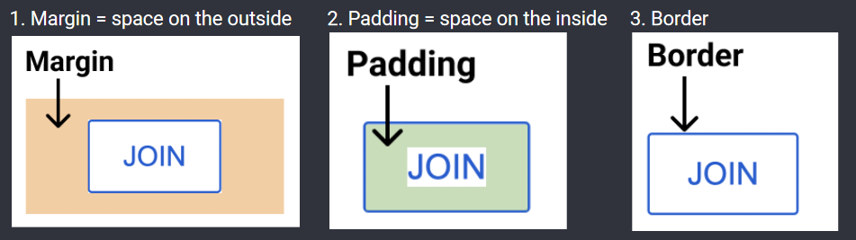

Determines how much space and how far away from other elements something is. Using this is better than forcing height and width as the element will grow with its content.
Box Model:
Margin: The space on the outside of an element
Padding: The space on the inside of an element
Border: The width of the border of the element
For adjusting:
Margin:
margin-right (or left, top, bottom)
margin: using 1 argument will put that on all sides, using 2 will put the first argument for the top and bottom and the second argument for the left and right
Negative margin pulls things towards an element, whereas positive margin adds space between them
Padding:
padding-right (or left, top, bottom)
padding: using 1 argument will put that on all sides, using 2 will put the first argument for the top and bottom and the second argument for the left and right
Negative padding does nothing
Border:
border-width: sets width
border-style <top> <right> <bottom> <left>: sets the type of border ie none, dotted, inset, solid, dashed, groove… (same logic for number of arguments)
border-color: sets color of border
border: <width> <style> <color>; is shorthand for all three